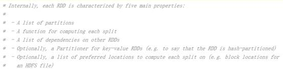
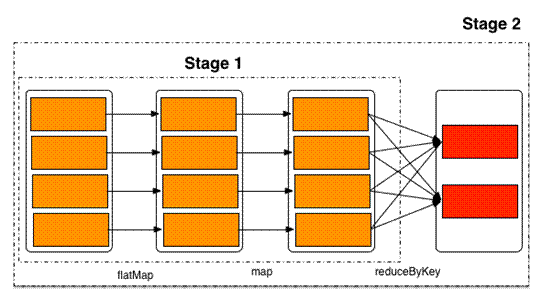
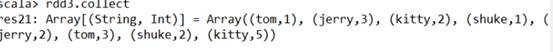
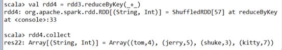
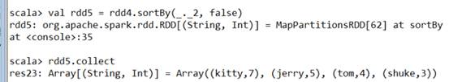
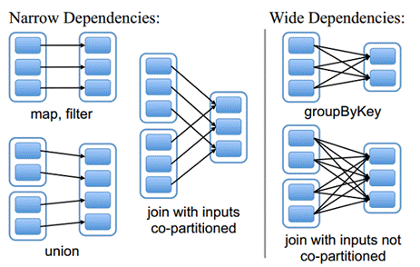
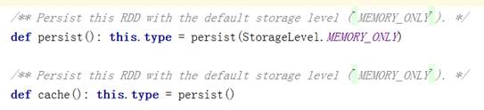
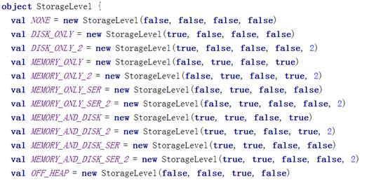
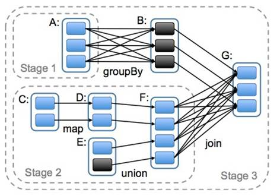

1.1. 熟练使用RDD的算子完成计算........................................................................... 2
RDD（Resilient Distributed Dataset）叫做分布式数据集，是Spark中最基本的数据抽象，它代表一个不可变、可分区、里面的元素可并行计算的集合。RDD具有数据流模型的特点：自动容错、位置感知性调度和可伸缩性。RDD允许用户在执行多个查询时显式地将工作集缓存在内存中，后续的查询能够重用工作集，这极大地提升了查询速度。

1）一组分片（Partition），即数据集的基本组成单位。对于RDD来说，每个分片都会被一个计算任务处理，并决定并行计算的粒度。用户可以在创建RDD时指定RDD的分片个数，如果没有指定，那么就会采用默认值。默认值就是程序所分配到的CPU
Core的数目。
2）一个计算每个分区的函数。Spark中RDD的计算是以分片为单位的，每个RDD都会实现compute函数以达到这个目的。compute函数会对迭代器进行复合，不需要保存每次计算的结果。
3）RDD之间的依赖关系。RDD的每次转换都会生成一个新的RDD，所以RDD之间就会形成类似于流水线一样的前后依赖关系。在部分分区数据丢失时，Spark可以通过这个依赖关系重新计算丢失的分区数据，而不是对RDD的所有分区进行重新计算。
4）一个Partitioner，即RDD的分片函数。当前Spark中实现了两种类型的分片函数，一个是基于哈希的HashPartitioner，另外一个是基于范围的RangePartitioner。只有对于key-value的RDD，才会有Partitioner，非key-value的RDD的Parititioner的值是None。Partitioner函数不但决定了RDD本身的分片数量，也决定了parent RDD Shuffle输出时的分片数量。
5）一个列表，存储存取每个Partition的优先位置（preferred location）。对于一个HDFS文件来说，这个列表保存的就是每个Partition所在的块的位置。按照“移动数据不如移动计算”的理念，Spark在进行任务调度的时候，会尽可能地将计算任务分配到其所要处理数据块的存储位置。
1）由一个已经存在的Scala集合创建。
val rdd1 =
sc.parallelize(Array(1,2,3,4,5,6,7,8))
2）由外部存储系统的数据集创建，包括本地的文件系统，还有所有Hadoop支持的数据集，比如HDFS、Cassandra、HBase等
val rdd2 =
sc.textFile("hdfs://node01/words.txt")
RDD中的所有转换都是延迟加载的，也就是说，它们并不会直接计算结果。相反的，它们只是记住这些应用到基础数据集（例如一个文件）上的转换动作。只有当发生一个要求返回结果给Driver的动作时，这些转换才会真正运行。这种设计让Spark更加有效率地运行。
常用的Transformation：
|
转换 |
含义 |
|
map(func) |
返回一个新的RDD，该RDD由每一个输入元素经过func函数转换后组成 |
|
filter(func) |
返回一个新的RDD，该RDD由经过func函数计算后返回值为true的输入元素组成 |
|
flatMap(func) |
类似于map，但是每一个输入元素可以被映射为0或多个输出元素（所以func应该返回一个序列，而不是单一元素） |
|
mapPartitions(func) |
类似于map，但独立地在RDD的每一个分片上运行，因此在类型为T的RDD上运行时，func的函数类型必须是Iterator[T] => Iterator[U] |
|
mapPartitionsWithIndex(func) |
类似于mapPartitions，但func带有一个整数参数表示分片的索引值，因此在类型为T的RDD上运行时，func的函数类型必须是 (Int, Interator[T]) => Iterator[U] |
|
sample(withReplacement, fraction, seed) |
根据fraction指定的比例对数据进行采样，可以选择是否使用随机数进行替换，seed用于指定随机数生成器种子 |
|
union(otherDataset) |
对源RDD和参数RDD求并集后返回一个新的RDD |
|
intersection(otherDataset) |
对源RDD和参数RDD求交集后返回一个新的RDD |
|
distinct([numTasks])) |
对源RDD进行去重后返回一个新的RDD |
|
groupByKey([numTasks]) |
在一个(K,V)的RDD上调用，返回一个(K, Iterator[V])的RDD |
|
reduceByKey(func, [numTasks]) |
在一个(K,V)的RDD上调用，返回一个(K,V)的RDD，使用指定的reduce函数，将相同key的值聚合到一起，与groupByKey类似，reduce任务的个数可以通过第二个可选的参数来设置 |
|
aggregateByKey(zeroValue)(seqOp, combOp, [numTasks]) |
|
|
sortByKey([ascending], [numTasks]) |
在一个(K,V)的RDD上调用，K必须实现Ordered接口，返回一个按照key进行排序的(K,V)的RDD |
|
sortBy(func,[ascending], [numTasks]) |
与sortByKey类似，但是更灵活 |
|
join(otherDataset, [numTasks]) |
在类型为(K,V)和(K,W)的RDD上调用，返回一个相同key对应的所有元素对在一起的(K,(V,W))的RDD |
|
cogroup(otherDataset, [numTasks]) |
在类型为(K,V)和(K,W)的RDD上调用，返回一个(K,(Iterable<V>,Iterable<W>))类型的RDD |
|
cartesian(otherDataset) |
笛卡尔积 |
|
pipe(command, [envVars]) |
|
|
coalesce(numPartitions) |
|
|
repartition(numPartitions) |
|
|
repartitionAndSortWithinPartitions(partitioner) |
|
|
动作 |
含义 |
|
reduce(func) |
通过func函数聚集RDD中的所有元素，这个功能必须是可交换且可并联的 |
|
collect() |
在驱动程序中，以数组的形式返回数据集的所有元素 |
|
count() |
返回RDD的元素个数 |
|
first() |
返回RDD的第一个元素（类似于take(1)） |
|
take(n) |
返回一个由数据集的前n个元素组成的数组 |
|
takeSample(withReplacement,num, [seed]) |
返回一个数组，该数组由从数据集中随机采样的num个元素组成，可以选择是否用随机数替换不足的部分，seed用于指定随机数生成器种子 |
|
takeOrdered(n, [ordering]) |
|
|
saveAsTextFile(path) |
将数据集的元素以textfile的形式保存到HDFS文件系统或者其他支持的文件系统，对于每个元素，Spark将会调用toString方法，将它装换为文件中的文本 |
|
saveAsSequenceFile(path) |
将数据集中的元素以Hadoop sequencefile的格式保存到指定的目录下，可以使HDFS或者其他Hadoop支持的文件系统。 |
|
saveAsObjectFile(path) |
|
|
countByKey() |
针对(K,V)类型的RDD，返回一个(K,Int)的map，表示每一个key对应的元素个数。 |
|
foreach(func) |
在数据集的每一个元素上，运行函数func进行更新。 |

启动spark-shell
/usr/local/spark-1.5.2-bin-hadoop2.6/bin/spark-shell --master
spark://node01:7077
练习1：
//通过并行化生成rdd
val rdd1 = sc.parallelize(List(5, 6, 4, 7, 3, 8, 2, 9, 1, 10))
//对rdd1里的每一个元素乘2然后排序
val rdd2 = rdd1.map(_ * 2).sortBy(x => x, true)
//过滤出大于等于十的元素
val rdd3 = rdd2.filter(_ >= 10)
//将元素以数组的方式在客户端显示
rdd3.collect
练习2：
val rdd1 = sc.parallelize(Array("a b c", "d e f",
"h i j"))
//将rdd1里面的每一个元素先切分在压平
val rdd2 = rdd1.flatMap(_.split(' '))
rdd2.collect
//来个复杂的：
val rdd1 = sc.parallelize(List(List("a b c", "a b b"),
List("e f g", "a f g"), List("h i j", "a a
b")))
/将rdd1里面的每一个元素先切分在压平
val rdd2 = rdd1.flatMap(_.flatMap(_.split(" ")))
rdd2.collect
练习3：
val rdd1 = sc.parallelize(List(5, 6, 4, 3))
val rdd2 = sc.parallelize(List(1, 2, 3, 4))
//求并集
val rdd3 = rdd1.union(rdd2)
//求交集
val rdd4 = rdd1.intersection(rdd2)
//去重
rdd3.distinct.collect
rdd4.collect
练习4：
val rdd1 = sc.parallelize(List(("tom", 1), ("jerry",
3), ("kitty", 2)))
val rdd2 = sc.parallelize(List(("jerry", 2), ("tom",
1), ("shuke", 2)))
//求join
val rdd3 = rdd1.join(rdd2)
rdd3.collect
//求左连接和右连接
val rdd3 = rdd1.leftOuterJoin(rdd2)
rdd3.collect
val rdd3 = rdd1.rightOuterJoin(rdd2)
rdd3.collect
//求并集
val rdd4 = rdd1 union rdd2
//按key进行分组
rdd4.groupByKey
rdd4.collect
//分别用groupByKey和reduceByKey实现单词计数
val rdd3 = rdd1 union rdd2
rdd3.groupByKey().mapValues(_.sum).collect
rdd3.reduceByKey(_+_).collect
//groupByKey与reduceByKey的区别
练习5：
val rdd1 = sc.parallelize(List(("tom", 1), ("tom",
2), ("jerry", 3), ("kitty", 2)))
val rdd2 = sc.parallelize(List(("jerry", 2), ("tom",
1), ("shuke", 2)))
//cogroup
val rdd3 = rdd1.cogroup(rdd2)
//注意cogroup与groupByKey的区别
rdd3.collect
练习6：
val rdd1 = sc.parallelize(List(1, 2, 3, 4, 5))
//reduce聚合
val rdd2 = rdd1.reduce(_ + _)
练习7：
val rdd1 = sc.parallelize(List(("tom", 1), ("jerry",
3), ("kitty", 2),
("shuke", 1)))
val rdd2 = sc.parallelize(List(("jerry", 2), ("tom",
3), ("shuke", 2), ("kitty", 5)))
val rdd3 = rdd1.union(rdd2)

//按key进行聚合
val rdd4 = rdd3.reduceByKey(_ + _)

rdd4.collect
//按value的降序排序
val rdd5 = rdd4.map(t => (t._2, t._1)).sortByKey(false).map(t =>
(t._2, t._1))
rdd5.collect

//笛卡尔积
val rdd3 = rdd1.cartesian(rdd2)
//其他：count、top、take、first、takeOrdered
//想要了解更多，访问下面的地址
http://homepage.cs.latrobe.edu.au/zhe/ZhenHeSparkRDDAPIExamples.html
RDD和它依赖的父RDD（s）的关系有两种不同的类型，即窄依赖（narrow dependency）和宽依赖（wide dependency）。

窄依赖指的是每一个父RDD的Partition最多被子RDD的一个Partition使用
总结：窄依赖我们形象的比喻为独生子女
宽依赖指的是多个子RDD的Partition会依赖同一个父RDD的Partition
总结：窄依赖我们形象的比喻为超生
RDD只支持粗粒度转换，即在大量记录上执行的单个操作。将创建RDD的一系列Lineage（即血统）记录下来，以便恢复丢失的分区。RDD的Lineage会记录RDD的元数据信息和转换行为，当该RDD的部分分区数据丢失时，它可以根据这些信息来重新运算和恢复丢失的数据分区。
Spark速度非常快的原因之一，就是在不同操作中可以在内存中持久化或缓存个数据集。当持久化某个RDD后，每一个节点都将把计算的分片结果保存在内存中，并在对此RDD或衍生出的RDD进行的其他动作中重用。这使得后续的动作变得更加迅速。RDD相关的持久化和缓存，是Spark最重要的特征之一。可以说，缓存是Spark构建迭代式算法和快速交互式查询的关键。
RDD通过persist方法或cache方法可以将前面的计算结果缓存，但是并不是这两个方法被调用时立即缓存，而是触发后面的action时，该RDD将会被缓存在计算节点的内存中，并供后面重用。

通过查看源码发现cache最终也是调用了persist方法，默认的存储级别都是仅在内存存储一份，Spark的存储级别还有好多种，存储级别在object StorageLevel中定义的。

缓存有可能丢失，或者存储存储于内存的数据由于内存不足而被删除，RDD的缓存容错机制保证了即使缓存丢失也能保证计算的正确执行。通过基于RDD的一系列转换，丢失的数据会被重算，由于RDD的各个Partition是相对独立的，因此只需要计算丢失的部分即可，并不需要重算全部Partition。
DAG(Directed Acyclic
Graph)叫做有向无环图，原始的RDD通过一系列的转换就就形成了DAG，根据RDD之间的依赖关系的不同将DAG划分成不同的Stage，对于窄依赖，partition的转换处理在Stage中完成计算。对于宽依赖，由于有Shuffle的存在，只能在parent RDD处理完成后，才能开始接下来的计算，因此宽依赖是划分Stage的依据。

http://homepage.cs.latrobe.edu.au/zhe/ZhenHeSparkRDDAPIExamples.html
mapPartitions
mapPartitionsWithIndex
val func = (index: Int, iter: Iterator[(Int)]) => {
iter.toList.map(x => "[partID:" + index + ", val: " + x + "]").iterator
}
//创建一个上下文对象
val conf: SparkConf = new SparkConf().setAppName("SparkWc").setMaster("local[*]")
//创建Spark的上下文对象，也是提交任务到集群的入口类
val sc: SparkContext = new SparkContext(conf)
val rdd1 = sc.parallelize(List(1,2,3,4,5,6,7,8,9), 2)
rdd1.mapPartitionsWithIndex(func).collect
-------------------------------------------------------------------------------------------
-------------------------------------------------------------------------------------------
aggregate
def func1(index: Int, iter: Iterator[(Int)]) : Iterator[String] = {
iter.toList.map(x => "[partID:" + index + ", val: " + x + "]").iterator
}
val rdd1 = sc.parallelize(List(1,2,3,4,5,6,7,8,9), 2)
rdd1.mapPartitionsWithIndex(func1).collect
rdd1.aggregate(0)(math.max(_, _), _ + _)
rdd1.aggregate(5)(math.max(_, _), _ + _)
val rdd2 = sc.parallelize(List("a","b","c","d","e","f"),2)
def func2(index: Int, iter: Iterator[(String)]) : Iterator[String] = {
iter.toList.map(x => "[partID:" + index + ", val: " + x + "]").iterator
}
rdd2.aggregate("")(_ + _, _ + _)
rdd2.aggregate("=")(_ + _, _ + _)
val rdd3 = sc.parallelize(List("12","23","345","4567"),2)
rdd3.aggregate("")((x,y) => math.max(x.length, y.length).toString, (x,y) => x + y)
val rdd4 = sc.parallelize(List("12","23","345",""),2)
rdd4.aggregate("")((x,y) => math.min(x.length, y.length).toString, (x,y) => x + y)
val rdd5 = sc.parallelize(List("12","23","","345"),2)
rdd5.aggregate("")((x,y) => math.min(x.length, y.length).toString, (x,y) => x + y)
-------------------------------------------------------------------------------------------
-------------------------------------------------------------------------------------------
aggregateByKey
val pairRDD = sc.parallelize(List( ("cat",2), ("cat", 5), ("mouse", 4),("cat", 12), ("dog", 12), ("mouse", 2)), 2)
def func2(index: Int, iter: Iterator[(String, Int)]) : Iterator[String] = {
iter.toList.map(x => "[partID:" + index + ", val: " + x + "]").iterator
}
pairRDD.mapPartitionsWithIndex(func2).collect
pairRDD.aggregateByKey(0)(math.max(_, _), _ + _).collect
pairRDD.aggregateByKey(100)(math.max(_, _), _ + _).collect
-------------------------------------------------------------------------------------------
-------------------------------------------------------------------------------------------
checkpoint
sc.setCheckpointDir("hdfs://node01:9000/ck")
val rdd = sc.textFile("hdfs://node01:9000/wc").flatMap(_.split(" ")).map((_, 1)).reduceByKey(_+_)
rdd.checkpoint
rdd.isCheckpointed
rdd.count
rdd.isCheckpointed
rdd.getCheckpointFile
-------------------------------------------------------------------------------------------
-------------------------------------------------------------------------------------------
repartition, coalesce
val rdd1 = sc.parallelize(1 to 10, 10)
val rdd2 = rdd1.coalesce(2, false)
rdd2.partitions.length
-------------------------------------------------------------------------------------------
-------------------------------------------------------------------------------------------
collectAsMap
val rdd = sc.parallelize(List(("a", 1), ("b", 2)))
rdd.collectAsMap
-------------------------------------------------------------------------------------------
-------------------------------------------------------------------------------------------
combineByKey
val rdd1 = sc.textFile("hdfs://node01:9000/wc").flatMap(_.split(" ")).map((_, 1))
val rdd2 = rdd1.combineByKey(x => x, (a: Int, b: Int) => a + b, (m: Int, n: Int) => m + n)
rdd2.collect
val rdd3 = rdd1.combineByKey(x => x + 10, (a: Int, b: Int) => a + b, (m: Int, n: Int) => m + n)
rdd3.collect
val rdd4 = sc.parallelize(List("dog","cat","gnu","salmon","rabbit","turkey","wolf","bear","bee"), 3)
val rdd5 = sc.parallelize(List(1,1,2,2,2,1,2,2,2), 3)
val rdd6 = rdd5.zip(rdd4)
val rdd7 = rdd6.combineByKey(List(_), (x: List[String], y: String) => x :+ y, (m: List[String], n: List[String]) => m ++ n)
-------------------------------------------------------------------------------------------
-------------------------------------------------------------------------------------------
countByKey
val rdd1 = sc.parallelize(List(("a", 1), ("b", 2), ("b", 2), ("c", 2), ("c", 1)))
rdd1.countByKey
rdd1.countByValue
-------------------------------------------------------------------------------------------
-------------------------------------------------------------------------------------------
filterByRange
val rdd1 = sc.parallelize(List(("e", 5), ("c", 3), ("d", 4), ("c", 2), ("a", 1)))
val rdd2 = rdd1.filterByRange("c", "d")
rdd2.colllect
-------------------------------------------------------------------------------------------
-------------------------------------------------------------------------------------------
flatMapValues
val rdd3 = sc.parallelize(List(("a", "1 2"), ("b", "3 4")))
rdd3.flatMapValues(_.split(" "))
-------------------------------------------------------------------------------------------
-------------------------------------------------------------------------------------------
foldByKey
val rdd1 = sc.parallelize(List("dog", "wolf", "cat", "bear"), 2)
val rdd2 = rdd1.map(x => (x.length, x))
val rdd3 = rdd2.foldByKey("")(_+_)
val rdd = sc.textFile("hdfs://node01:9000/wc").flatMap(_.split(" ")).map((_, 1))
rdd.foldByKey(0)(_+_)
-------------------------------------------------------------------------------------------
-------------------------------------------------------------------------------------------
foreachPartition
val rdd1 = sc.parallelize(List(1, 2, 3, 4, 5, 6, 7, 8, 9), 3)
rdd1.foreachPartition(x => println(x.reduce(_ + _)))
-------------------------------------------------------------------------------------------
-------------------------------------------------------------------------------------------
keyBy
val rdd1 = sc.parallelize(List("dog", "salmon", "salmon", "rat", "elephant"), 3)
val rdd2 = rdd1.keyBy(_.length)
rdd2.collect
-------------------------------------------------------------------------------------------
-------------------------------------------------------------------------------------------
keys values
val rdd1 = sc.parallelize(List("dog", "tiger", "lion", "cat", "panther", "eagle"), 2)
val rdd2 = rdd1.map(x => (x.length, x))
rdd2.keys.collect
rdd2.values.collect
-------------------------------------------------------------------------------------------
-------------------------------------------------------------------------------------------
/usr/local/spark-1.6.1-bin-hadoop2.6/bin/spark-shell \
--master spark://node01:7077 \
--jars /usr/local/spark-1.6.1-bin-hadoop2.6/mysql-connector-java-5.1.35-bin.jar \
--driver-class-path /usr/local/spark-1.6.1-bin-hadoop2.6/mysql-connector-java-5.1.35-bin.jar
***
val rdd1 =sc.textFile("hdfs://hadoop01:9000/root/tmp/wc").flatMap(_.split(" ")).map((_,1))
val rdd2=rdd1.commbineByKey(x=>x,(a:Int,b:Int) => a+b ,(m:Int,n:Int)=> m +n )
scala> rdd2.collect
res1: Array[(String, Int)] = Array((php,3), (python,2), ("",2), (hello,1), (java,3), (sql,1), (js,2), (html,3))
**
val rdd4 = sc.parallelize(List("dog","cat","gnu","salmon","rabbit","turkey","wolf","bear","bee"), 3)
val rdd5 = sc.parallelize(List(1,1,2,2,2,1,2,2,2), 3)
val rdd6=rdd5.zip(rdd4)
scala> rdd6.collect
res3: Array[(Int, String)] = Array((1,dog), (1,cat), (2,gnu), (2,salmon), (2,rabbit), (1,turkey), (2,wolf), (2,bear), (2,bee))
val rdd7 =rdd6.combineByKey(List(_),(x:List[String],y:String) => x:+y,(m:List[String] ,n:List[String])=>m++n)
scala> rdd7.collect
res6: Array[(Int, List[String])] = Array((1,List(dog, cat, turkey)), (2,List(salmon, rabbit, wolf, bear, bee, gnu)))
**
val rdd1 = sc.parallelize(List(("e", 5), ("c", 3), ("d", 4), ("c", 2), ("a", 1)))
val rdd2 = rdd1.filterByRange("c", "d")
过滤字母a-z之间的
**
val rdd3 = sc.parallelize(List(("a", "1 2"), ("b", "3 4")))
rdd3.flatMapValues(_.split(" "))
**
val rdd1 = sc.parallelize(List(("a", 1), ("b", 2), ("b", 2), ("c", 2), ("c", 1)))
scala> rdd1.countByKey
res7: scala.collection.Map[String,Long] = Map(b -> 2, a -> 1, c -> 2)
scala> rdd1.countByValue
res12: scala.collection.Map[(String, Int),Long] = Map((b,2) -> 2, (c,2) -> 1, (a,1) -> 1, (c,1) -> 1)
**
val rdd1 =sc.parallelize(List("dog","catt","bear"),2)
val rdd2=rdd1.map(x => (x.length,x))
scala> rdd2.collect
res13: Array[(Int, String)] = Array((3,dog), (4,catt), (4,bear))
val rdd3 =rdd2.foldByKey("")(_+_)
scala> rdd3.collect
res14: Array[(Int, String)] = Array((4,cattbear), (3,dog))
**
val rdd =sc.textFile("hdfs://hadoop01:9000/root/tmp/wc").flatMap(_.split(" ")).map((_,1))
scala> rdd.collect
res15: Array[(String, Int)] = Array((hello,1), (php,1), (sql,1), (java,1), (html,1), ("",1), (html,1), (html,1), (java,1), (java,1), (php,1), (php,1), (python,1), (python,1), (js,1), ("",1), (js,1))
val rdd1=rdd.foldByKey(0)(_+_)
scala> rdd1.collect
res18: Array[(String, Int)] = Array((php,3), (python,2), ("",2), (hello,1), (java,3), (sql,1), (js,2), (html,3))